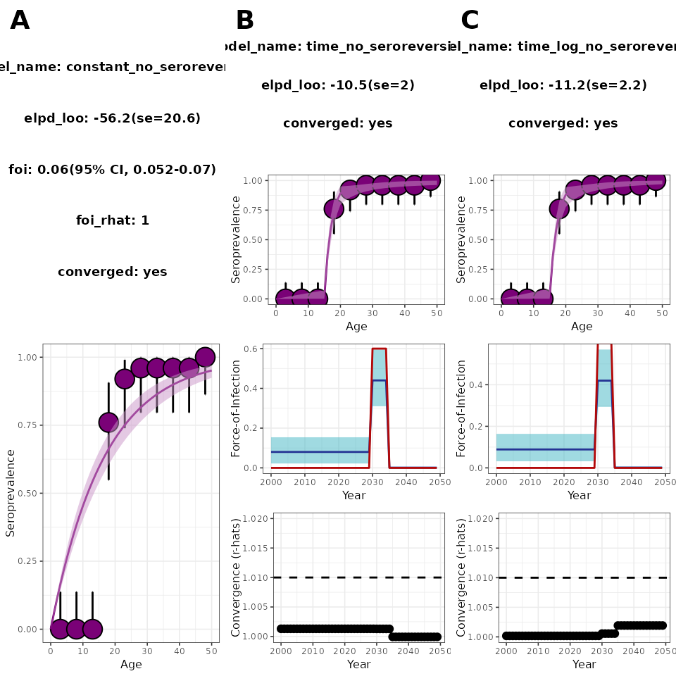

An introduction to force-of-infection models
foi_models.RmdThe current version of serofoi supports three different serocatalytic models for estimating the Force-of-Infection (FoI): constant, age-varying, and time-varying FoI. To estimate relevant parameters we employ a suit of Bayesian models using age-disaggregated population-based cross-sectional serological surveys as input data.
What is the Force-of-Infection
The force of infection, also known as the hazard rate or the infection pressure, is a key concept in mathematical modelling of infectious diseases. It represents the rate at which susceptible individuals become infected, given their exposure to a pathogen. In simple terms, the force of infection quantifies the risk of a susceptible individual becoming infected over a period of time. It is usually expressed as a rate per unit of time (e.g., per day or per year).
To illustrate this, consider a simple SIR model:
The FoI in this case is defined as (Note that the FoI is time-dependent by definition). To solve this system of equations, we need to know the transmission rate, , and the rate of recovery from infection , as well as some initial conditions.
Serocatalytic models offer a simpler perspective: to estimate how the risk of historical exposure to a pathogen varies depending on the time of birth of the individuals in the sample. For this, we put together the and compartments into a single seropositives compartment and consider the the dynamics of each birth cohort separately: where is the proportion of individuals born in year who are seronegative at time . Assuming lack of maternal antibodies, the initial condition for each cohort can be specified as . Depending on whether the FoI is constant, time dependent, or age dependent, this system of equations yields the different solutions on which serofoi is based on.
Constant vs Time-varying FoI
The FoI is often incorrectly assumed to be constant over time. Identifying whether the FoI follows a constant, an age-varying or a time-varying trend can be important in the identification and characterization of the spread of disease. serofoi offers tools to implement and compare a wide variety of Bayesian models to estimate the FoI according to the aforementioned serocatalytic models.
In the idealised situation where FoI is constant :
Applying the integrating factor method and using the initial conditions yields to the solution:
meaning that, in the long rung, the seropositivity converges to 1.
In more realistic applications, the FoI is assumed to be piecewise-constant on discrete intervals of 1-year length. The solution for each year is then: where corresponds to the seropositivity at the end of the previous year and is the constant value assumed for the FoI at time . From the resulting recursive equation, it is possible to obtain analytical solutions for the seropositivity along each 1-year length chunk.
Considering seroreversion
Since it is possible for seropositive individuals to lose immunity over time, we consider the rate at which infected individuals become seronegative . The system of equations is now:
Similarly, this yields to a iterative solution for the seropositivity when piece-wise constant FoI is considered:
where, again, corresponds to the proportion of seropositive individuals of cohort by the end of the previous year. Correct indexation and simplification of this equation allows the description of age-dependent FOIs.
Estimating the FoI - Bayesian modelling
Now that we can describe the proportion of seropositive individuals
by means of the serocatalytic models for constant, time-varying, and
age-varying FOIs, what we want is to obtain estimates of the FoI
and the seroreversion rate
by sampling from a Bayesian model taking a cross-sectional serological
survey as data. For this, we can use serofoi’s
fit_seromodel(), which relies on the statistical
programming language Stan to perform this task. The current
available models are summarised in table 1:
| Serocatalytic model | scale | n_seropositive | FoI_1 prior | FoI_i, i>1 | sigma | mu |
|---|---|---|---|---|---|---|
| constant | regular | binomial(sample_size, prob_infected) | normal(mean, sd) uniform(min, max) |
- | cauchy(mean, sd) | normal(mean, sd) uniform(min, max) |
| age | regular | binomial(sample_size, prob_infected) | normal(mean, sd) uniform(min, max) |
normal(FoI_{i-1}, sigma) | cauchy(mean, sd) | normal(mean, sd) uniform(min, max) |
| time | regular | binomial(sample_size, prob_infected) | normal(mean, sd) uniform(min, max) |
normal(FoI_{i-1}, sigma) | cauchy(mean, sd) | normal(mean, sd) uniform(min, max) |
| time | log | binomial(sample_size, prob_infected) | normal(mean, sd) uniform(min, max) |
normal(FoI_{i-1}, sigma) | normal(location, scale) | normal(mean, sd) uniform(min, max) |
Table 1. Available options.
Model 1. Constant Force-of-Infection (endemic model)
The endemic constant model is a simple mathematical model used in epidemiology to describe the seroprevalence of an infectious disease within a population, as a product of a long-term transmission. In this case, the rate of infection acquisition is constant over time, and the seroprevalence behaves as a cumulative process increasing monotonically with age.
We always model the number of positive cases according to a binomial distribution, where and are the sample size and number of seropositive of age group respectively:
To test the constant model we simulate a serosurvey
following a stepwise decreasing FoI (red line in Fig. 1) using
the data simulation functions of serofoi:
# how the disease circulates
foi_df <- data.frame(
year = seq(2000, 2049, 1),
foi = rep(0.02, 50)
)
# specify 5-year age bins for observations
survey_features <- data.frame(
age_min = seq(1, 50, 5),
age_max = seq(5, 50, 5),
sample_size = rep(25, 10)
)
serosurvey_constant <- simulate_serosurvey(
"time",
foi_df,
survey_features
) %>%
mutate(survey_year = 2050)The simulated dataset serosurvey_constant contains
information about 250 samples of individuals between 1 and 50 years old
(5 samples per age) with age groups of 5 years length. The following
code shows how to implement the constant model to this simulated
serosurvey:
seromodel_constant <- fit_seromodel(
serosurvey = serosurvey_constant,
model_type = "constant",
iter = 800
)
plot_seromodel(
seromodel_constant,
serosurvey = serosurvey_constant,
foi_df = foi_df,
size_text = 6
) Figure 1. Constant serofoi model plot. Simulated (red) vs modelled
(blue) FoI.
Figure 1. Constant serofoi model plot. Simulated (red) vs modelled
(blue) FoI.
In this case, 800 iterations are enough to ensure convergence.
plot_seromodel() returns a visualisation of the results
including a summary where the expected log pointwise predictive density
(elpd) and its standard error (se) are shown.
We say that a model converges if all the R-hat estimates are below
1.01.
Time-varying FoI models
For the time-varying FoI models, the probability for a case to be positive at age a at time also follows a binomial distribution, as described above. However, the seroprevalence is obtained from a cumulative of the yearly-varying values of the FoI over time:
Model 2. Time-varying FoI - Slow Time-Varying FoI
The time-varying model (model_type = "time")
uses a forward random walk algorithm where the prior of the first
chronological FoI value in the time-span of the serological survey can
be either a normal distribution (foi_prior = sf_normal())
or a uniform distribution (foi_prior = sf_unif()).
Subsequent values of the FoI are sampled from the normal distribution as
,
where
.
The prior distribution for the seroreversion rate can also be either
normal or uniform, and is specified by means of the parameter
seroreversio_prior.
To test the tv_normal model we simulate a serosurvey
following a stepwise decreasing FoI (red line in Fig. 2) using
the data simulation functions of serofoi:
foi_df <- data.frame(
year = seq(2000, 2049, 1),
foi = c(
rep(0.2, 25),
rep(0.1, 10),
rep(0.00001, 15)
)
)
survey_features <- data.frame(
age_min = seq(1, 50, 5),
age_max = seq(5, 50, 5),
sample_size = rep(25, 10)
)
serosurvey_sw_dec <- simulate_serosurvey(
"time",
foi_df,
survey_features
) %>%
mutate(survey_year = 2050)The simulated dataset foi_sim_sw_dec contains
information about 250 samples of individuals between 1 and 50 years old
(5 samples per age) with age groups of 5 years length. The following
code shows how to implement the slow time-varying normal model to this
simulated serosurvey:
seromodel_time_normal <- fit_seromodel(
serosurvey = serosurvey_sw_dec,
model_type = "time",
foi_index = rep(c(1, 2, 3), c(25, 10, 15)),
iter = 1500
)
plot_seromodel(
seromodel_time_normal,
serosurvey = serosurvey_sw_dec,
foi_df = foi_df,
size_text = 6
) Figure 2. Slow time-varying serofoi model plot. Simulated (red) vs
modelled (blue) FoI.
Figure 2. Slow time-varying serofoi model plot. Simulated (red) vs
modelled (blue) FoI.
The number of iterations required may depend on the number of years, reflected by the difference between the year of the serosurvey and the maximum age-class sampled.
Model 3. Time-varying FoI - Fast Epidemic Model
The time-varying fast epidemic model is parametrized in such a way that the initial FoI value in the forward random walk is sampled in the logarithmic scale. In this case, the priors for subsequent FOIs are: $$ \log\left(\lambda(t)\right) \sim \mathcal{N}(\log(\lambda(t-1)), \sigma) \\ \sigma \sim \mathcal{N} (0, 1) $$ This is done in order to capture fast changes in the FoI trend.
To test the log_time model we simulate a serosurvey
conducted in 2050 emulating a hypothetical situation where a three-year
epidemic occurred between 2030 and 2035:
foi_df <- data.frame(
year = seq(2000, 2049, 1),
foi = c(
rep(0, 30),
rep(0.6, 5),
rep(0, 15)
)
)
survey_features <- data.frame(
age_min = seq(1, 50, 5),
age_max = seq(5, 50, 5),
sample_size = rep(25, 10)
)
serosurvey_large_epi <- simulate_serosurvey(
survey_features = survey_features,
foi_df,
model = "time"
) %>%
mutate(survey_year = 2050)The simulated serosurvey tests 250 individuals between 1 and 50 years old by the year 2050. The implementation of the fast epidemic model can be obtained running the following lines of code:
seromodel_log_time_normal <- fit_seromodel(
serosurvey = serosurvey_large_epi,
model_type = "time",
is_log_foi = TRUE,
foi_index = rep(c(1, 2, 3), c(30, 5, 15)),
iter = 2000
)
plot_log_time_normal <- plot_seromodel(
seromodel_log_time_normal,
serosurvey = serosurvey_large_epi,
foi_df = foi_df,
size_text = 6
)
plot(plot_log_time_normal) Figure 3. Time-varying fast epidemic serofoi model plot.
Simulated (red) vs modelled (blue) FoI.
Figure 3. Time-varying fast epidemic serofoi model plot.
Simulated (red) vs modelled (blue) FoI.
In Fig 3 we can see that the fast epidemic serofoi model is
able to identify the large epidemic simulated on the
simdata_large_epi dataset.
Models Comparison
Above we showed that the fast epidemic model (specified by
model_type = "time" and is_log = TRUE in
fit_seromodel()) is able to identify the large epidemic
outbreak described by the dataset simulated according to a step-wise
decreasing FoI (red line in Fig 3).
Now, we would like to know whether this model actually fits this
dataset better than the other available models in
serofoi. For this, we also implement both the
endemic model (model_type = "constant") and the slow
time-varying normal model (model_type="time",
is_log = FALSE):
Using the function cowplot::plot_grid we can visualise
the results of the three models simultaneously:
cowplot::plot_grid(
plot_constant, plot_time_normal, plot_log_time_normal,
nrow = 1, ncol = 3, labels = "AUTO"
) Figure 4. Model comparison between the three serofoi models for a large-epidemic simulated dataset.
A common criterion to decide what model fits the data the best is to
choose the one with the larger elpd. According to this
criterion, in this case the best model is the fast epidemic model, which
is the only one that manages to identify the large epidemic (see the
second row of panel C in Figure 4).
NOTE: Running the serofoi models for the first time on your local computer may take a few minutes for the rstan code to compile locally. However, once the initial compilation is complete, there is no further need for local compilation.